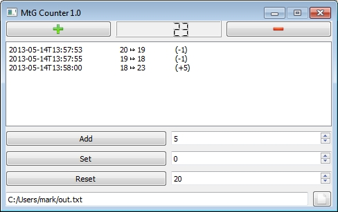
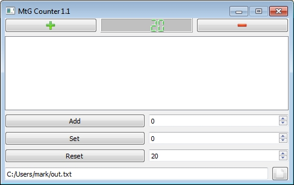
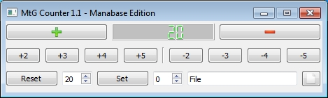

Welcome to the Counter project site.
Counter is a simple, free life counter program for Magic the Gathering, licensed under the GNU GPLv3.
It has the possibility to save the current life value into a .txt file as requested by manabase.de. This feature is used to read the counter into a video streaming software.
Counter uses Qt and works on Windows, Mac and Linux, though there are only Windows builds available at the time. There are three versions:
- v1.0 - The standard version (Download). 
- v1.1 - The standard version with coloured LCD (Download). 
- v1.1 manabase-edition - A special, compact version for manabase.de available in the branch "manabase-edition" (Download). 
For more than one player or additional counters like poison counters just open another instance of the program ;-)
For further details see the README.md file.
Authors and Contributors
@VanNostrand, the folks from manabase.de
Support or Contact
Checkout the source code and contribute.
Having trouble? Use the issue tracker.